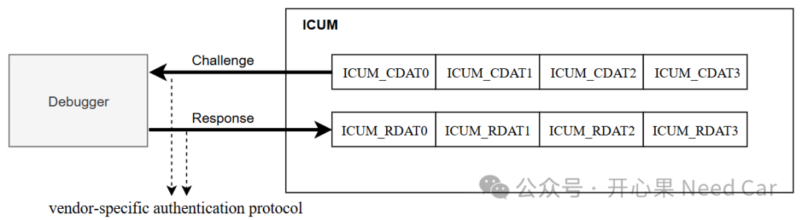

开心果 Need Car · 2026-08-20T06:20:00+08:00 · 微信原文
在车规级 MCU 的应用中，安全性已不再是“附加功能”，而是系统设计的核心组成部分。随着汽车电子向域控制器、中央计算平台演进，MCU 面临的威胁也从传统的代码泄露，扩展到调试接口攻击、固件篡改以及非法克隆等多个层面。
瑞萨 RH850/F1KM 作为典型的车规 MCU，采用了较为完善的 Challenge–Response（挑战‑响应，简称 C&R）机制，用于保护调试接口、Flash 操作以及关键配置资源。本文将围绕该机制展开系统性的说明。
一、为什么需要 Challenge–Response 机制
传统 MCU 如果只依赖调试接口使能 / 禁止，一旦接口暴露，就容易被仿真器直接接管，从而读取程序或篡改固件。而在车规场景中，这种风险是不可接受的。
RH850/F1KM 的设计目标是：即使调试接口“物理可达”，也必须通过身份认证才能继续访问。
Challenge–Response 正是实现这一目标的核心手段，它引入了一个基于密钥的身份验证过程，将访问权限从“是否接线”升级为“是否被授权”。
二、RH850/F1KM 中的安全架构角色
在 F1KM 中，安全机制并不完全由主核（Host Core）承担，而是引入了 ICUM（Integrated Control / Security Management）的概念。
因此，C&R 机制涉及两个主体：
CPU（PE）：主处理核心，负责应用程序运行
ICUP：安全管理单元，负责调试、Flash、GPIO 等安全仲裁
正是由于这两个主体的存在，RH850 的 C&R 机制几乎总是成对出现，例如“CPU C&R”和“ICUP C&R”，这在相关寄存器中体现得非常明显。
三、Challenge–Response 的基本工作流程
从逻辑上看，RH850/F1KM 的 C&R 过程可以抽象为六个步骤：
（1）访问请求
外部调试器或编程工具请求调试、Flash 编程或 Option 访问。
（2）Challenge 生成
芯片内部生成 Challenge 数据，该数据与当前安全状态、内部逻辑相关。
（3）Challenge 输出
Challenge 通过调试接口提供给外部工具。
（4）Response 计算
外部工具利用预先掌握的密钥，对 Challenge 进行算法运算，生成 Response。
（5）Response 提交
将 Response 写回芯片指定寄存器。
（6）认证判断
芯片内部计算期望值并比对：匹配则解锁访问，不匹配则锁定接口。
简化成流程图，如下所示：
调试器 / 编程器 | | 1. 请求访问（debug / flash / option） v RH850 芯片 | | 2. 生成 Challenge（随机或半随机） v Challenge Data | | 3. 通过调试接口返回 v 调试器 / 编程工具 | | 4. 用“设备共享密钥”计算 Response v Response Data | | 5. 写回芯片指定寄存器 v RH850 芯片 | | 6. 验证 Response | |—— 成功 → 解锁调试/Flash |—— 失败 → 锁死调试接口 |
整个过程中，密钥从不直接暴露，这是 C&R 安全性的根基。这个过程有点类似UDS的0x27（SecurityAccess，安全访问）服务流程。
四、Challenge 的选择与分发机制
RH850/F1KM 允许分别针对 CPU 或 ICUP 进行认证。在 ICUM_IDAS 寄存器中，通过 CDATSEL 位选择 Challenge 的来源：
CDATSEL = 0：CPU（PE）相关 Challenge
CDATSEL = 1：ICUP 相关 Challenge
这种设计使得系统可以灵活区分以下场景：只放开 CPU 调试，但 ICUP 仍保持受限，或在量产阶段完全关闭两个主体的调试访问。
五、C&R 是否启用由谁决定？
是否启用 Challenge–Response，并不是运行时随意决定的，而是由 Option Byte 控制。在 OPBT12 中，可以看到两个关键控制位：
ICUMCRF1：CPU（PE）的 C&R 使能控制
ICUMCRF2：ICUP 的 C&R 使能控制
其典型含义为：
0：启用 Challenge–Response
1：跳过认证（仅建议工程样片阶段）
在量产产品中，这两个位通常都被配置为启用状态，否则整套安全链条将失去意义。
六、认证结果如何体现
认证结果主要体现在 ICUM_IDAS 的几个状态位中：IDLOCK
0：认证成功，系统处于解锁状态
1：认证失败，系统被锁定
CRLOCK1 / CRLOCK2
分别对应 ICUP 和 CPU 的调试接口锁状态。
一旦认证失败，这些位会被置位，调试接口立即失效。
需要注意的是，在某些安全配置下，这种锁定只能通过电源复位甚至量产工具才能恢复。
七、C&R 与 Flash / GPIO / WDT 的关系
Challenge–Response 并不仅仅用于“调试口打不开”这一场景。
在 RH850/F1KM 中：Flash 编程与擦除、GPIO 的控制权归属、Watchdog 的模式和行为都可能受到 ICUM 的安全仲裁。而 ICUM 是否允许这些操作，往往取决于 C&R 是否成功。因此，可以说：C&R 是整颗芯片安全机制的根节点。
八、Green Hills 在 RH850/F1KM Challenge–Response 机制中的要点
在 RH850/F1KM 的安全体系中，Challenge–Response（C&R）并非由 PE（CPU）自身完成，而是由外部调试/编程工具在调试连接阶段执行。Green Hills（MULTI + Probe）在其中仅充当调试前端与协议执行者，并不直接生成 Challenge，也不计算 Response。
手册描述如下：
32 bits of the 128-bit challenge data to be passed to a debugger in challenge-and-response authentication. • ICUM_CDAT0: Challenge Data[31:0] • ICUM_CDAT1: Challenge Data[63:32] • ICUM_CDAT2: Challenge Data[95:64] • ICUM_CDAT3: Challenge Data[127:96] 32 bits of the 128-bit response data to be passed from a debugger in challenge-and-response authentication. • ICUM_RDAT0: Response Data[31:0] • ICUM_RDAT1: Response Data[63:32] • ICUM_RDAT2: Response Data[95:64] • ICUM_RDAT3: Response Data[127:96] |
也就是说：ECU产生的Challenge数据写到ICUM_CDATi寄存器，之后给到debugger，同时，debugger计算的Response会写到ICUM_RDATi对应的寄存器。
当通过 Green Hills 连接目标芯片、下载程序或访问受保护资源时，若 Option Byte 启用了 C&R，调试器会自动触发 Debug Authentication 流程。此过程中，Green Hills 会通过 Renesas 官方提供的安全认证接口或插件，隐式配置 ICUM_IDAS 中的 CDATSEL 位，选择认证对象（CPU 或 ICUP）。
Challenge 由芯片内部 ICUM 生成，并通过调试协议返回给认证模块，而非映射到普通的内存地址，因此用户无法在 MULTI 或程序中直接读取。随后，Renesas 安全模块利用内部或客户密钥计算 Response，并通过同一认证协议写入芯片，该写入过程不是普通的寄存器或内存写操作，示意如下：

认证结果最终体现在 ICUM_IDAS 的 IDLOCK 以及 CRLOCK 位中。认证成功则解锁 PE 的调试与相关权限；失败则调试接口被锁定，部分配置下需上电复位或量产流程才能恢复。
Green Hills 只是执行认证流程的框架，真正的 Challenge 获取与 Response 计算，均依赖 Renesas 的安全组件完成。
（一）Renesas Security / Authentication Library（关键软件组件）
由 Renesas 提供给：
Green Hills
Renesas Flash Programmer
量产编程工具
功能包括：
接收 Challenge
使用内部或客户密钥计算 Response
通过调试协议写入 Response
密钥不暴露给 IDE 或用户程序
工具侧集成组件
以插件、DLL、加密模块形式存在
与调试器耦合（如 GHS Probe、E2、仿真器）
工程师通常：只配置，不开发，不接触算法细节。
Renesas 的安全组件不能在官网公开下载，必须通过正式渠道、在特定场景下由 Renesas 提供或授权获取。
九、工程与量产中的典型使用策略
一个常见的产品生命周期配置如下：
工程阶段：C&R 可暂时跳过，方便调试与功能验证。
量产阶段：启用 CPU 与 ICUP 的 C&R，锁定调试接口，仅通过授权工具访问 Flash 与配置区。
这种分阶段策略，在保证开发效率的同时，也满足了车规级安全要求。
结语
瑞萨 RH850/F1KM 的 Challenge–Response 机制并不是孤立存在的功能，而是贯穿调试访问、Flash 安全、系统配置 的核心安全支柱。
理解它的角色划分、寄存器控制和状态反馈，不仅有助于解决“调试进不去”的问题，更是做好量产安全设计的前提。
如果没有 C&R 的正确配置，再强大的硬件性能也可能在量产阶段变得“岌岌可危”。
往期精彩回顾